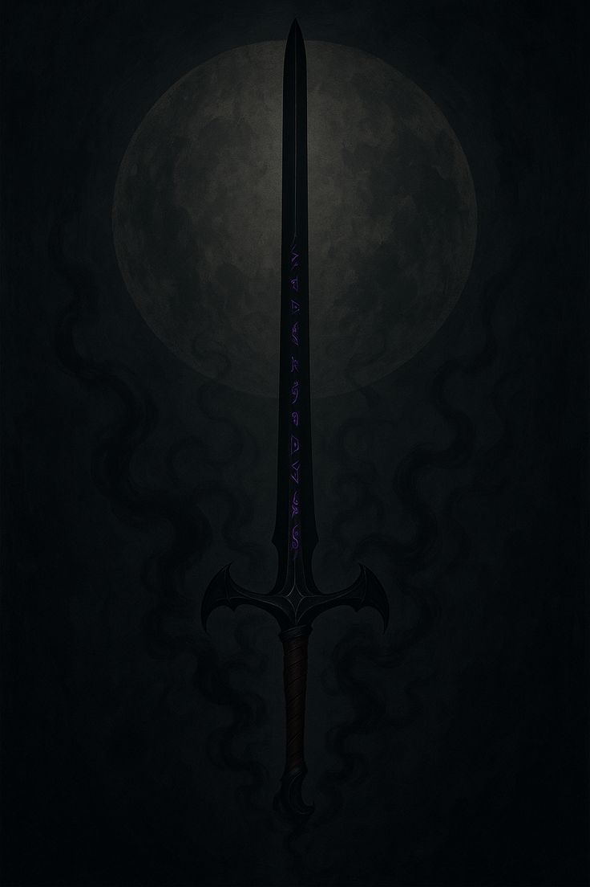
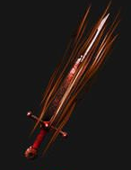

EQUIPMENT

False Sovereign
 Toxic
Toxic
Rage Haste
HasteForged from the melted bones of three fallen tyrants and infused with their dying curses, False Sovereign was born when the Toxicsword's corruption merged with the Ragesword's endless fury and the Hasteword's manic velocity. The resulting blade is not just a weapon, but a crown of lies made manifest - promising dominion while delivering only the sweet poison of absolute power.
The Toxicsword's essence seeps through every strike, injecting a venom that doesn't merely kill but transforms. Each wound becomes a injection point for corruption that spreads like wildfire through the victim's moral foundation, turning saints into sinners and heroes into tyrants. The toxin doesn't destroy - it perverts, making the wounded believe their darkest impulses are righteous commands.
The Hasteword grants the blade supernatural speed, moving faster than conscience can intervene. Decisions are made and executed before wisdom can whisper warnings, creating a feedback loop where increasingly terrible choices happen too quickly for regret to form.
False Sovereign whispers promises of kingship to all who grasp it, but the crown it offers is woven from toxified rage and reckless haste - the perfect trap for those who mistake brutality for leadership and corruption for power.